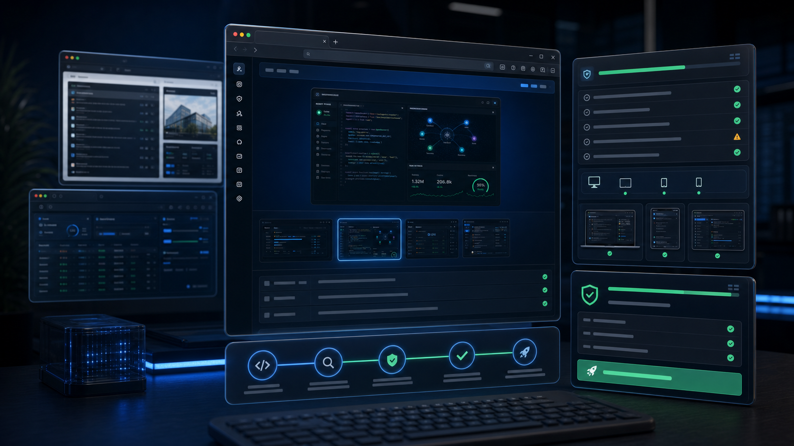

Chat and Code
Natural language to code and explanations with multi-model support.
GPT-4o, Claude 3.5, GeminiEverything you need to plan, code, test, and ship with confidence from one private AI coding workspace.
These are the signature capabilities that make the suite feel different from a normal chat box or editor plugin.
LANA sits beside the workspace while Jarvis-style voice control gives builders a hands-free command path for questions, approvals, and status.
Switch between providers, compare readiness, watch health signals, and keep fallback choices visible before a run.
Map projects, sources, agents, APIs, docs, tests, and decisions so complex builds become inspectable.
Preview built apps, capture screenshots, inspect browser state, and keep customer-ready evidence close to the chat.
Use focused skills for UI, documents, data, security, GitHub, testing, deployments, and repeatable workflows.
Every build can move through run, inspect, decide, act, verify, and report cycles with approval-first guardrails.
Each capability is designed to reduce context switching and give the agent better project memory.
Natural language to code and explanations with multi-model support.
GPT-4o, Claude 3.5, GeminiUnderstands your codebase, docs, and project decisions.
Embeddings, RAG, graphAutomate tasks with reusable agent workflows.
Builder, triggers, stepsRefactor, generate tests, fix bugs, and optimize.
Refactor, tests, lintRun, verify, and iterate until confidence is high.
Checks, reports, auditsShip to your stack with integrations and handoff notes.
CI/CD, APIs, webhooksReal Lux Coder Suite surfaces for command center work, source management, and readiness checks.



The native developer loop, powered by context, actions, and verification.
Set the project foundation, model roster, memory, and access rules.
Bring in files, repos, notes, screenshots, and product assets.
Let the agent create structure, context, tasks, and next steps.
Execute, test, inspect, and refine in verified feedback loops.
Ship with confidence, monitor outcomes, and improve the system.
Download the suite or compare it against the tools you already use.